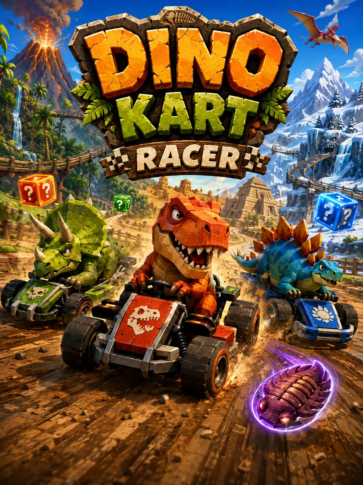

Notice the problem
Pay attention to friction, missing information, and what people actually need.
Healthcare · Business · Technology
I’m John Villanueva—a BSN candidate and California CNA with a background in business banking, marketing, and digital projects. Healthcare is now the center of the career, but the rest of the toolkit still shapes how I communicate, solve problems, and build.
Current chapter: finishing my BSN, working in direct care, building browser projects, studying Japanese, and probably fitting in a Marvel Rivals match somewhere between the serious parts.
Choose your route
Start with work, projects, life, or the path that connects them. Each route offers a different view of the same person.
Patient-care experience, nursing education, business background, credentials, and the résumé.
View professional profile → 02 / BUILDERBrowser games, study tools, language practice, web projects, and the process behind them.
Browse the project library → 03 / HUMANGaming, travel, Japanese, anime, karaoke, computers, community, and future plans.
Take the extended vibe check → 04 / STORYA chronological look at how service, business, education, technology, and healthcare became one path.
Open the timeline →
Playable nowFeatured build
Dino Kart Racer grew from a browser-game experiment into a prehistoric combat racer with rival AI, power-ups, collisions, sound, and an extremely committed homing trilobite.
The throughline
Whether the setting is bedside care, business banking, a class project, or a browser game, I tend to return to the same fundamentals.
Pay attention to friction, missing information, and what people actually need.
Turn a broad challenge into a sequence that can be understood and acted on.
Make complex information usable without flattening the human context.
Test the result, learn from reality, and revise without treating iteration as failure.
More than one lane
The goal is not to make every interest sound professional. It is to build a life where meaningful work, creative play, learning, relationships, and global perspective can all coexist.